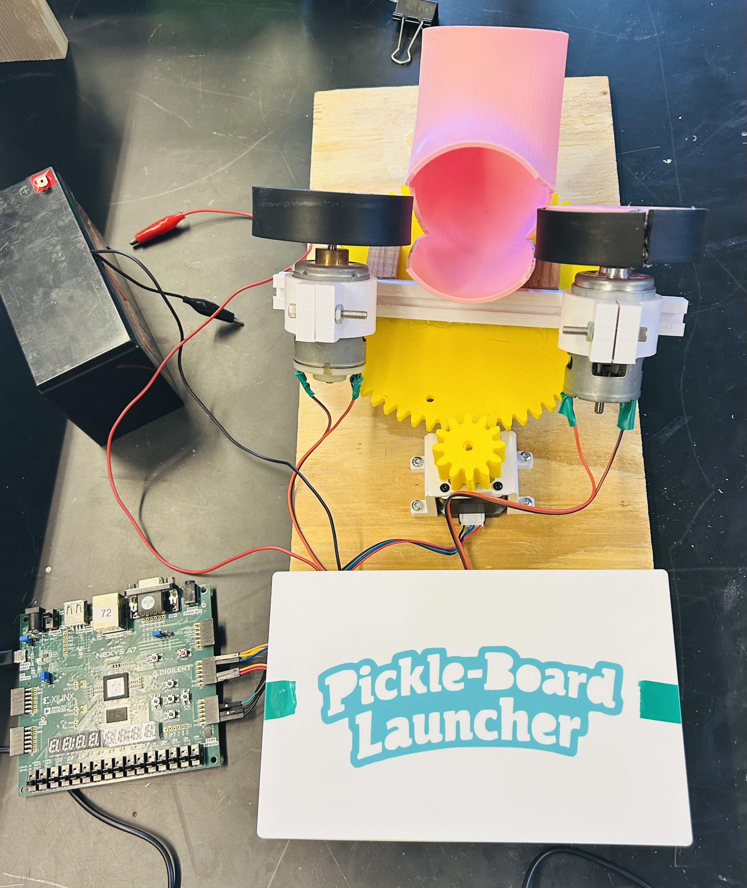

FPGA Pickleball Launcher
MIPS-Controlled System

FPGA Pickleball Launcher on the Nexys A7
Launcher in action
Overview
Built a fully functional pickleball launcher controlled by a custom MIPS processor implemented entirely in hardware on a Nexys A7 FPGA. The system combines low-level digital design — a 5-stage pipelined processor written in Verilog — with embedded control firmware in MIPS assembly, driving real physical actuators for motor speed, rotation, and multiple firing modes.
This project spanned the full hardware-software stack: from register-transfer-level processor design with hazard handling, all the way up to memory-mapped I/O and physical peripheral control.
5-Stage Pipelined Processor
Designed and implemented a custom MIPS processor in Verilog, executing instructions across five pipeline stages with full hazard mitigation:
IF
Instruction Fetch
→
ID
Instruction Decode
→
EX
Execute
→
MEM
Memory Access
→
WB
Write Back
- Hazard detection unit identifies data and control hazards at runtime
- Data forwarding paths route results directly between pipeline stages, avoiding unnecessary stalls
- Stall logic inserts pipeline bubbles when forwarding cannot resolve a dependency
Memory-Mapped I/O & Peripherals
- Designed a memory-mapped I/O subsystem that exposes physical peripherals as addressable memory locations, allowing MIPS assembly programs to control hardware through standard load/store instructions
- PWM peripheral drives DC motors at variable speeds, enabling precise control of launch velocity
- Stepper motor peripheral controls launcher rotation and ball feed direction
- Control logic written in MIPS assembly coordinates multiple peripherals simultaneously to enable distinct firing modes
Technologies Used
Verilog
MIPS Assembly
Nexys A7 FPGA
Vivado
Pipelined CPU Design
Hazard Detection
Data Forwarding
Memory-Mapped I/O
PWM
Stepper Motors